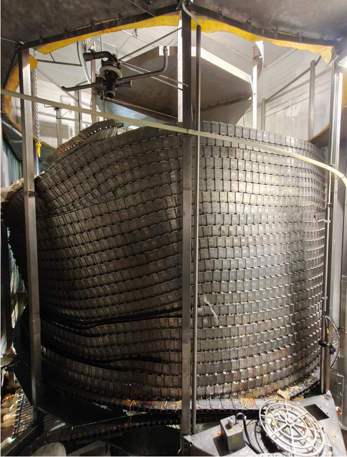
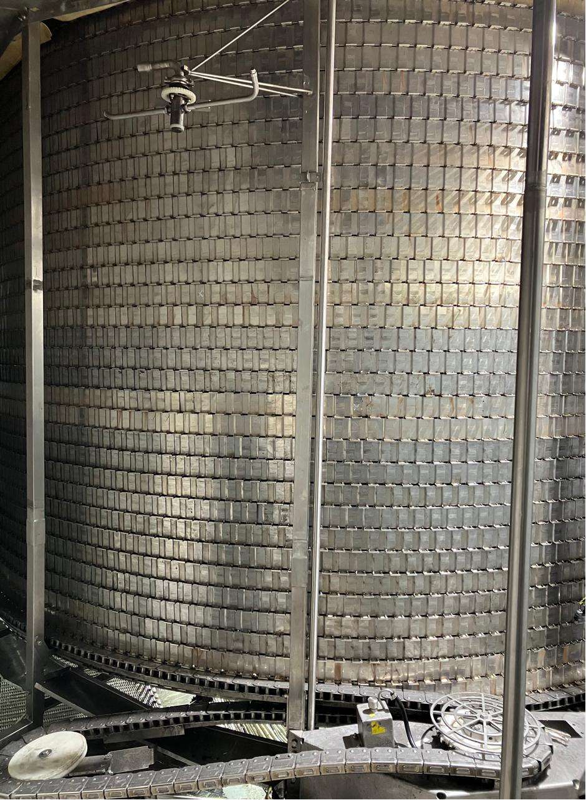

How a Self-Stacking Spiral Works
In a self-stacking spiral, the belt builds its own structure. Each belt tier rests on the side plates of the tier below, so the stack supports itself without an internal cage or support rails for every level. At the base, a drive chain system carries the stack, turns it and lifts it in a continuous helix.
This design saves space and allows long retention times in a compact footprint. But it also means that the geometry of every component is part of the structure. A small deviation at the base is carried up and added through every tier of the stack.
What Happens When the Stack Fails
When the tiers no longer seat correctly on each other, the stack starts to lean, side plates ride out of position and sections of the belt slide off the tier below. The result is destacking: the spiral collapses, product is lost, the belt is damaged and the line stops for hours or days.


Destacking is rarely caused by a single failed part. In most cases it is the sum of several components that have each drifted out of tolerance over time. Each one alone may look acceptable, but together they push the stack beyond its stability limit.
The Critical Tolerances
Worn or mixed-size balls change the support height and rolling friction of the drive system. Uneven support at the base tilts the whole stack.
Worn, stepped or misaligned glide strips create height differences and friction peaks. The belt is lifted unevenly and the tiers stop seating correctly.
As the drive chain wears, its pitch grows. Engagement with the belt changes, the pull becomes uneven and the lifting motion loses its smooth, constant rate.
Wear at the rods and links lengthens the belt pitch. A stretched belt no longer matches the drive and the stack geometry, and the side plates drift out of their intended position.
The side plates carry the weight of every tier above them. Bent or dented plates cannot seat and interlock properly, so the stack height varies and tiers can ride out.
If the drive chains are not level around the full circumference, the base of the stack is tilted from the start. The error is multiplied by the number of tiers.
The correct tolerances depend on the spiral model, belt type and operating conditions. BELTPRO measures each component against the equipment specifications and advises which parts can stay in service and which must be replaced.
Laser Levelling for Uniform Elevation
The drive chains set the starting plane of the whole stack. For the belt to rise in a smooth, uniform helix, the chains must be at the correct elevation all the way around the spiral. Visual checks and spirit levels are not precise enough over the full diameter.
BELTPRO uses laser levelling to survey the drive chain elevation at points around the full circumference, identify high and low spots, and adjust the supports until the elevation is uniform. The result is a stack that starts level and stays straight all the way to the top.
Outfeed Speed Synchronization
At the top of the stack, the belt leaves the spiral and passes over the outfeed shaft, which has its own drive motor. This outfeed drive must run in sync with the speed of the rotating stack. If the two speeds do not match, the belt slides on the last tier instead of leaving the stack smoothly.
The outfeed pulls the belt faster than the stack delivers it. The extra pull lifts and drags the top tiers and can destack the last levels of the spiral.
The stack delivers belt faster than the outfeed takes it away. The belt accumulates and bunches up as it exits the spiral, causing jams, link damage and product problems.
BELTPRO measures the actual RPM of the stack drive and the outfeed shaft in operation, then calculates the correct number of teeth for the outfeed sprockets so the outfeed speed matches the stack. With the right ratio, the belt leaves the last tier smoothly and the whole system runs without slip, pull or accumulation.
For a preliminary check, the BELTPRO Stacker Outfeed Drive Ratio Calculator is available in the Calculators section of our website.
How BELTPRO Inspects a Self-Stacking Spiral
- Measure the balls and check for wear, flat spots and size variation.
- Inspect the glide strips for wear, steps at the joints and alignment.
- Measure drive chain elongation and check sprockets and wear parts.
- Measure belt pitch at several points to evaluate stacker belt elongation.
- Inspect side plates for deformation, damage and correct seating.
- Survey the drive chains with a laser and correct the elevation.
- Measure stack and outfeed RPM and calculate the correct outfeed sprocket teeth.
- Deliver a report with findings, recommended replacements and supervised restart.
Field Experience: From Collapse to a Straight Stack
The spiral shown in the before photo had destacked during production. The inspection found several components out of tolerance at the same time, none of which would have explained the failure alone. After replacing the worn parts and laser levelling the drive chains, the stack returned to straight, uniform operation, as shown in the after photo.
The lesson: a self-stacking spiral should be inspected as a complete system. Checking tolerances on a regular schedule costs far less than a single collapse.
BELTPRO Self-Stacking Spiral Service
BELTPRO performs tolerance inspections, laser levelling, outfeed speed synchronization, component replacement planning and supervised restacking for self-stacking spirals. Contact us to schedule a preventive inspection or to recover a spiral after a destacking event.
This article is intended for general technical guidance and preliminary engineering reference only. Inspection criteria, tolerances and adjustments must always follow the equipment manufacturer's documentation, the actual operating conditions and the plant's safety procedures.